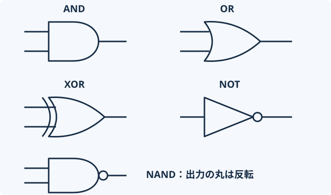
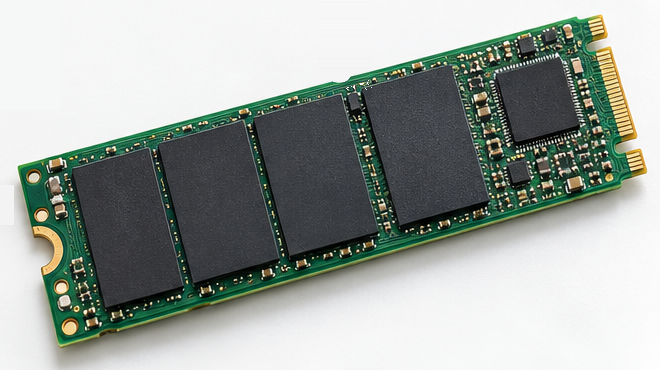

このページで学ぶこと
- 条件のつなぎ方（AND・OR・XOR・NOT）
- 真理値表の読み方
1.まずイメージを掴む
通販サイトで「送料無料」と「在庫あり」の両方にチェックすると、両方を満たす商品だけが残ります。スマホのロックは、顔認証か暗証番号のどちらかで開きます。
「満たす＝1、満たさない＝0」とすると、こうした判断は0と1の計算になります。これが論理演算です。
2.なぜこの仕組みなのか
なぜ0と1の計算で判断できるの？
どんなに複雑な判断も、「かつ（AND）」「または（OR）」「ではない（NOT）」の組合せで書けます。この計算をする小さな部品が論理ゲートです。CPUの中には、これが数十億個も並んでいます。
なぜXORという演算があるの？
XORは「同じなら0、違えば1」。2つのデータが同じかどうかを調べるのに便利です。しかも、同じ値で2回XORすると元に戻るので、暗号で大活躍します。
1010 XOR 0110 = 1100 → 1100 XOR 0110 = 1010（元に戻る）
3.仕組みを理解する
5つの演算を一言で
- AND：両方1なら1
- OR：どちらか1なら1
- XOR：違えば1
- NOT：反転（0と1を入れ替える）
- NAND：ANDの反対（実は主役。次の節で）
真理値表：全部の組合せを並べた表
入力AとBの組合せは4通りだけ。全部並べると、違いが一目で分かります。
| A | B | AND | OR | XOR | NAND |
|---|---|---|---|---|---|
| 0 | 0 | 0 | 0 | 0 | 1 |
| 0 | 1 | 0 | 1 | 1 | 1 |
| 1 | 0 | 0 | 1 | 1 | 1 |
| 1 | 1 | 1 | 1 | 0 | 0 |
記号の形

4.NANDは万能ゲート
NANDは「ANDの反対」というおまけではありません。NANDを組み合わせるだけで、NOTもANDもORも、全部作れます。そのため万能ゲートと呼ばれます。
| 作りたいもの | NANDでの作り方 | NANDの数 |
|---|---|---|
| NOT A | 同じAを両方に入れる：A NAND A | 1個 |
| A AND B | A NAND Bを、もう1回NOTする | 2個 |
| A OR B | AとBをそれぞれNOTしてから、NANDする | 3個 |
なぜ回路ではNANDが主役なの？
1種類の部品で全部作れれば、工場は同じ部品をたくさん並べるだけで済みます。しかもNANDは、ANDより少ない部品で作れて、速い。実は、ANDのほうが「NANDの後ろにNOTを付けたもの」として作られています。
身近なNAND：SSDもスマホも
パソコンのSSD、スマホの保存領域、USBメモリ、SDカード。電源を切ってもデータが消えないこれらの記憶装置は、ほとんどがNAND型フラッシュメモリでできています。記憶する部品のつなぎ方がNANDゲートに似ていることから、この名前が付きました。

あなたのスマホの写真や連絡先も、NANDの名前を持つ部品の中に保存されています。
5.触ってみる
このLabで確かめること
- Lab 1：ORとXORは、両方1のときだけ結果が違うこと。
- Lab 2：NANDをつなぐだけで、ほかの演算が作れること。
進め方
- Lab 1のANDで、入力を4通り試す。
- A=1、B=1のまま、ORとXORを切り替える。
- Lab 2で回路を選び、入力を全部試して、何の演算になるか確かめる。
Lab 1：入力を変えて、出力を確かめる
予想：A=1、B=1のとき、ORとXORは同じ結果になるでしょうか？
実線は1、破線は0。数値のラベルでも状態を確認できます。
A=0、B=0 → AND → Y=0
両方が1のときだけ1になります。
| A | B | Y | 入力位置 |
|---|
Lab 2：NANDをつないで、何になる？
予想：NANDを3個つないだ回路3は、どの演算と同じになるでしょうか？
実線は1、破線は0。途中の線（N1など）の値も表示します。
| A | B | Y | 入力位置 |
|---|
6.試験ではこう問われる
- 真理値表を見て、どの演算かを当てる
- ビット列のAND・OR・XOR（桁ごとに計算する）
- NANDだけでつないだ回路が、どの演算と同じになるか
1010 AND 1100 = 1000
ANDは、残したいbitだけ1にした値と組み合わせると、そのbitだけを取り出せます（マスク）。
ひっかけ注意：両方1のとき、ORは1、XORは0です。
学習を振り返る
覚えておく用語
- AND
- 両方1なら1
- OR
- どちらか1なら1
- XOR
- 違えば1
- NOT
- 反転
- NAND
- ANDの反対。これだけで全部の演算を作れる（万能ゲート）
- 真理値表
- 入力の全組合せと出力の表
- マスク
- ANDで必要なbitだけ取り出す
できるようにすること
- 2入力の真理値表を書ける
- 4bitのAND・OR・XORを計算できる
- ORとXORを見分けられる
- NANDでNOTを作る方法を説明できる